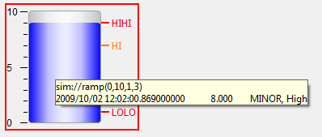

Macros are some predefined strings that can be embedded in any string based properties such as "PV Name", "Text", "Tooltip", "Rules" and so on. Macro will be replaced with its string value at Runtime.
Exception: the script text or the generated script text from rule will not be parsed for macro replacing because that is too expensive.
The macro format can be either $(macro_name) or ${macro_name}
There are three types of macros: Symbol Macro, Property Macro and System Macro.
Symbol Macros can be defined in several places as listed below.
If a same macro is defined in multiple places and
the option Include macros from parent in Macros property is selected,
it will be overriden in the order as below.
For example, macros defined in Display's Macro property will override the macros defined in Open OPI Actions,
and macros defined in Open OPI Actions will override the macros defined in BOY Preferences.
CSS->Preferences...->CSS Applications->Display->BOY->OPI RuntimeMacros property of Display.Macros property of container widget, such as
Grouping Container, Linking Container and Tabbed Container.Attention: Macro name only allows letters and numbers (should not start with number).
When you startup css from command line, you can specify the OPI files you want to run and their macros input:
css --launcher.openFile "<path_to_opi>/file1.opi macro1=value1, macro2=value2" "<path_to_opi2>/file2.opi"
It also allows embedding [\ascii-code] in macros when inputting macros from command line. For example:
css --launcher.openFile "<path_to_opi>/file1.opi macro1=A[\58]B, macro2=value2" "<path_to_opi2>/file2.opi"
In above example, the value of macro1 is A:B.
If there is already a CSS instance running, it will open the OPIs in the running CSS. The option --launcher.openFile is not necessary if following lines were added to css.ini:
--launcher.defaultAction openFile
Note1: For Linux GTK, ":" is not allowed in macros. Instead using [\58].
Note2: To make this command line work for Linux machine, you may need to add follow lines to your css.ini which is under your CSS directory (this line should be added before -vmargs):
-vm /path to/libjvm.so
You may able to find the path to libjvm.so by using command locate libjvm.so See https://bugs.eclipse.org/bugs/show_bug.cgi?id=331122
This allows you to access the value of a property of the widget in run mode. In this case, the macro_name is the property id of the widget property. For example, $(pv_name), $(pv_value), $(forground_color)...
A good example of Widget Property Value Macro is the tooltip: A tooltip of "$(pv_name)$(pv_value)" will display the PV Name and its value in run mode.

These macros are predefined in BOY. They can be overriden by Symbol Macros. Here are two macros available:
$(DID): The unique ID for each display. Even if there are
multiple displays refering to the same physical OPI file, each display still has an unique ID.
This macro is useful for avoiding
name conflict. For example, if we add a prefix of $(DID)_ to a local PV name, we can easily
guarantee the PV name is unique to this display. $(DNAME): The name of the display.